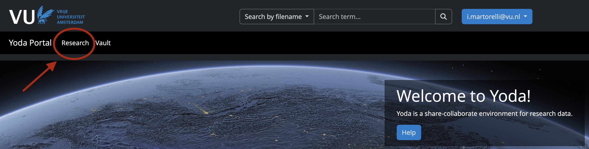
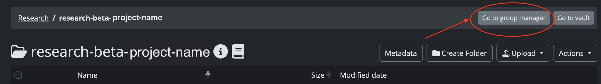
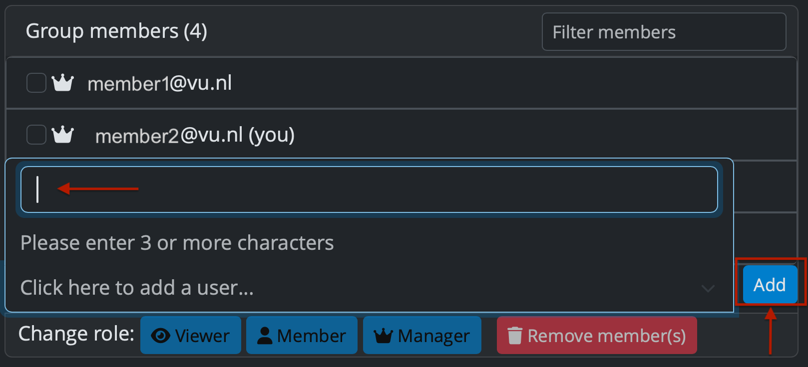
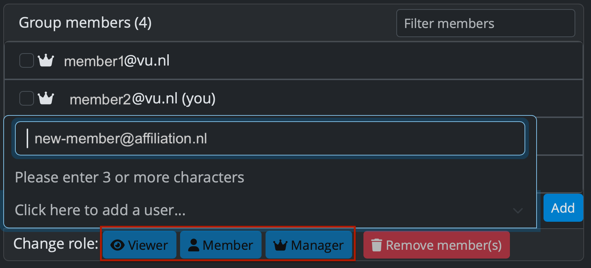
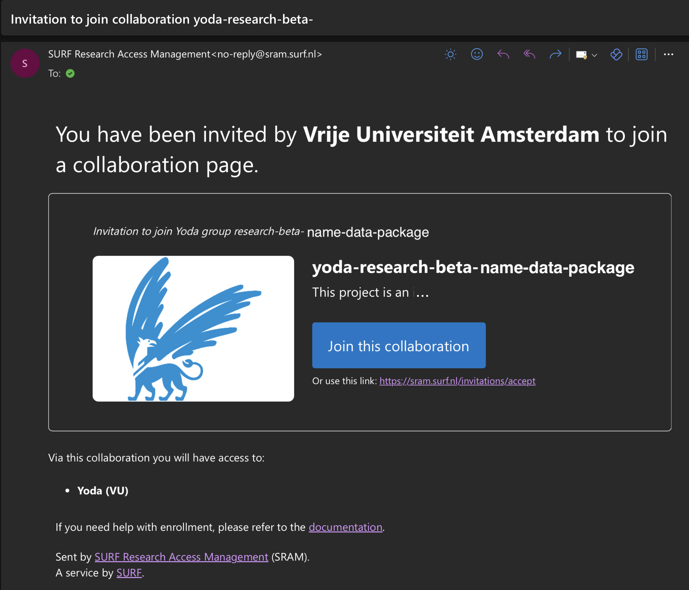
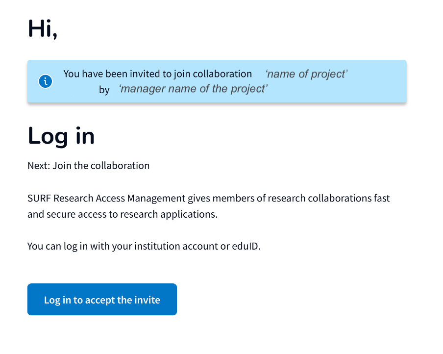
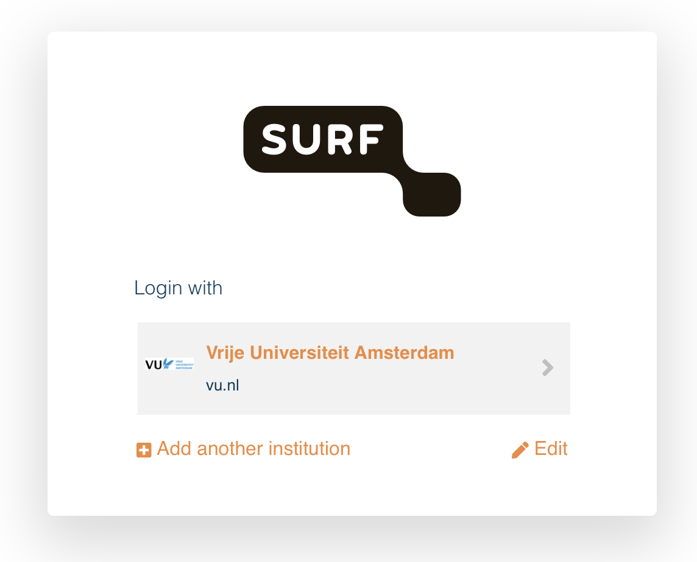
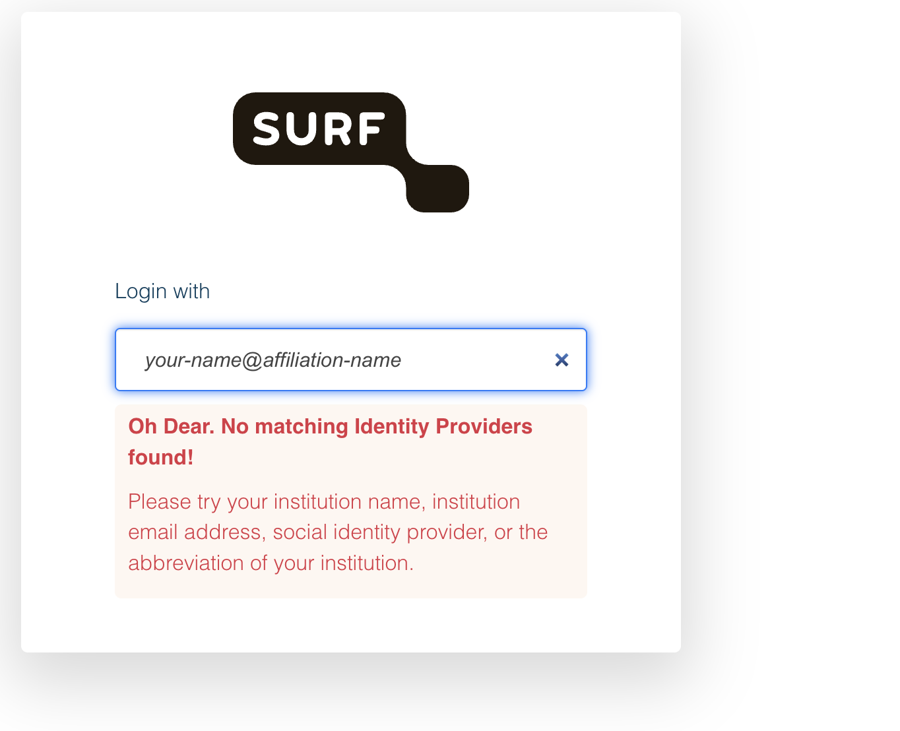
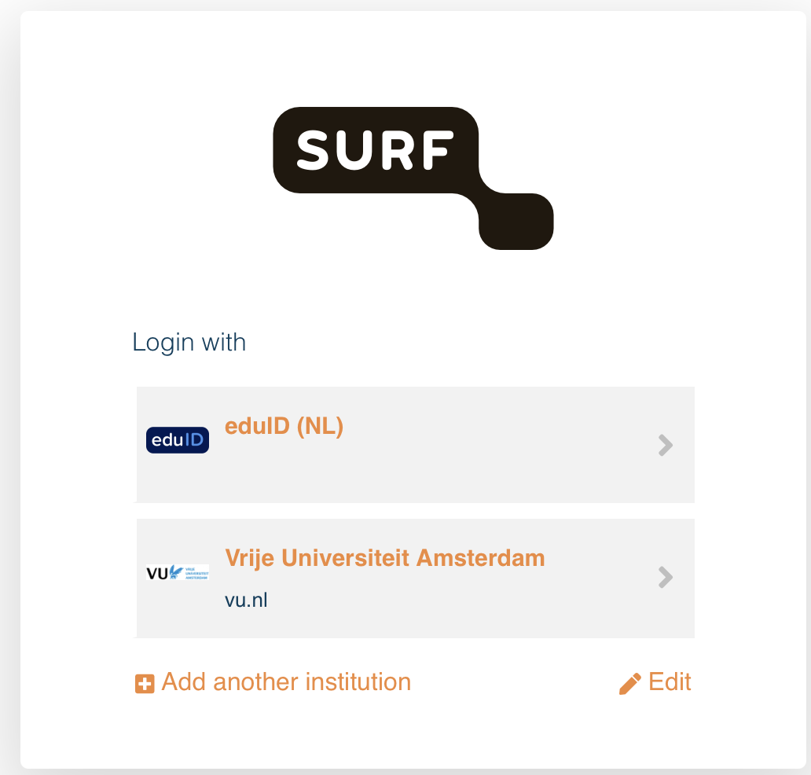

Manage Group Members in Yoda¶
Manage Group Members in Yoda¶
Overview
This is the Manage Group Members page, part of VU Tools → Yoda in the A-LIFE RDM collection.
This page explains how to manage access to your Yoda Research Space, including user roles and how to add both VU-affiliated and external collaborators:
Authors: Irene Martorelli, Brett Olivier — Last modification: 2026-06-27 — Version: 0.2.0
 Who manages the group?¶
Who manages the group?¶
When you submit the Request Yoda Space form, two roles are defined:
- Project Manager — the head of the research project, responsible for the overall project
- Project Owner — the person managing the data day-to-day (can be the same person as the Project Manager)
Both the Project Manager and the Project Owner are automatically granted Group Manager permissions in Yoda. This means they are the ones responsible for granting access to other members of the Research Space.
Two owners are better than one
It is strongly recommended to have at least two Group Managers per Research Space. This ensures that access management is not blocked if one person is unavailable, and reduces the risk of losing administrative control over the space.
Share with the minimum necessary
Only add members who genuinely need access to the Research Space — either to view the data or to contribute to it as required by the project. Limiting access reduces security risks and keeps the group manageable.
 1. Adding VU-affiliated users¶
1. Adding VU-affiliated users¶
Members with a VU affiliation (VUnetID) can be added to your Yoda Research Space directly by a Group Manager — no invitation email is required. Once added, they can log in immediately via https://portal.yoda.vu.nl using their VU credentials.
VUnetID — your personal credentials for accessing all VU Amsterdam digital services.
 VU Amsterdam — VUnetID information
VU Amsterdam — VUnetID information
Steps for adding a VU-affiliated member¶
-
Log in to the VU Yoda Portal — https://portal.yoda.vu.nl and go to your Research Space.

Figure 1: Research Space in the Yoda Portal -
Browse to your project — click on the Research tab and select the project you want to manage. Click on the project name to open its folders.
-
Open the Group Manager — click on "Go to group manager" to access the group management interface.

Figure 2: Group Manager access -
Add a new member — enter the VU email address of the person you want to add, assign them a role, and confirm.
Only Group Managers can add members
Adding members to a Yoda project is only allowed by a Group Manager. If you do not have this role, contact your project's Group Manager to request access for new members.

Figure 3: Adding a new group member You need to assign a role to the new member you would like to include.

Figure 4: Selecting a role for the new group member The available roles are:
Role Accessibility Description  Viewer
ViewerRead-only Can view and download files in the group  Member
MemberRead / Write Can view, download, upload, modify, or delete files and folders in the group  Manager
ManagerRead / Write / Admin Can grant and revoke access rights for the group; can also view, download, upload, modify, or delete files and folders in the group Only Managers can add and remove members
Only users with the Manager role can add or remove members from a Yoda group. If you do not have this role, contact your project's Manager to manage group access.
The roles of existing members are visible via the icons displayed before their name in the Group Manager window. To change a member's role, click on their email address in the Group Manager window.
Steps for the new member — accepting the invitation¶
Once added, the new member will receive an email from SURF Research Access Management (SRAM) with the subject line "Invitation to join collaboration yoda-research-[name-of-project]". They must follow the steps below to accept the invitation and access the Research Space.
Do not ignore the invitation email!
The invitation link is time-limited — if it is not accepted within the validity period, it will expire and a new invitation will need to be sent. Make sure to inform your new member to check their inbox (including spam) and act on the invitation promptly.
-
Join the collaboration — click on the blue link found in the SURF invitation email to proceed to the collaboration join page.

Figure 4: SURF invitation email — join collaboration link -
Accept the invitation — on the collaboration page, click the blue button "Log in to accept the invite".

Figure 5: Accept the collaboration invitation -
Login via your institution — select Vrije Universiteit Amsterdam by clicking the grey box with the VU icon and log in with your VU credentials.

Figure 6: Select Vrije Universiteit Amsterdam to log in -
Access the research data project — after logging in, click the blue button "Proceed to yoda-research-[name-of-project]" to enter the Research Space. From this point onwards you can log in directly via the Yoda portal.
[screenshot to be added]
 2. Inviting external users¶
2. Inviting external users¶
Collaborators without a VU affiliation need to be invited through a different process. External users will receive an invitation by email and must complete a registration step before they can access the Research Space.
Steps for the new member — logging in without a VU affiliation¶
The steps for joining the collaboration and accepting the invitation are the same as for VU-affiliated users (steps 1–2 above). The difference is at the login step:
-
Login via your institution — if your institute is included in the list of institutions using SRAM, you can select your institution name from the list, which will redirect you to your familiar institutional login page. If your institute is not part of the list, when you try to login you will see the following page:

Figure: Login page shown when your institution is not part of the SRAM list -
Create an eduID if you do not have one — if your institution is not in the SRAM list, you can log in using eduID (NL).
If you do not yet have an eduID, follow the instructions in the Manual: Create an eduID first, then return here to continue.
-
Select eduID (NL) to log in — go back to the SRAM invitation link you received by email and select eduID (NL) from the list of login options. This option will be used every time you access the project via the Yoda portal.

Figure: Selecting eduID (NL) from the SRAM login options -
Access the research data project — after logging in with your eduID, you will see the SRAM welcome screen. Click Proceed to accept the invitation and access the Yoda Research Space.
What next?
Group members set up? Continue to Metadata and Documentation to prepare your data package for archiving.
Further reading